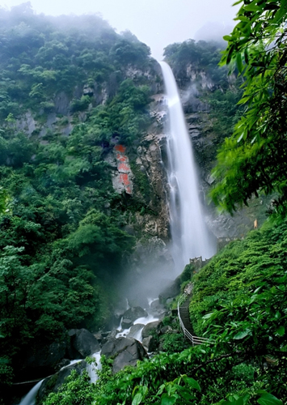

明月山旅游区位于赣西中部有"中国宜居城市"、"国家园林城市"、"国家卫生城市"、"国家绿化模范城市"、"2010中国最佳休闲养生城市"之称的宜春市中心城西南15公里处，旅游区面积104平方公里。景区由12座海拔千米以上的大小山峰组成，主峰太平山海拔1735.6米。明月山景区融山、石、林、泉、瀑、湖、竹海为一体，集雄、奇、幽、险、秀于一身，拥有五顶国字号桂冠：国家级风景名胜区、国家AAAA景区、国家森林公园、国家地质公园、国家自然遗产，也是全国自驾游示范基地、中国最具影响力森林公园、中国首批自驾车旅游统计信息数据采集点，是一个"以月亮情吸引人，用生态美景留住人"的集生态游览、休闲度假、科普教育、宗教旅游为一体的山岳型风景名胜区。
【月亮文化唯美浪漫】明月山以月为名，因月扬名。月亮文化，是明月山之灵，是明月山之魂。明月山将月亮文化景观和自然景观有机融合，形成了 “山上有个月亮湖，山下一个月亮湾，沿途都是月亮景，处处体现月亮情”的情景交融格局，从月亮湾到月亮湖，可倾情体验浪漫月亮情怀：明月广场相遇、荷塘月前相识、咏月碑林相知、竹林月影相约、晃月桥上相牵、抱月亭中相恋、浸月潭边相印、月下老人相系、拜月坛上相誓、梦月山庄相拥，明月处处有，此山月最明。在明月山你可享受着独特的“月在山中行，山在月中明”的绝妙意境。
【自然风光秀美迷人】 明月山旅游区属亚热带湿润季风性气候，山水奇特，气候温和，年平均气温在12℃——15℃左右，年平均降水量为1800—2000mm，适应各种动植物生长，素有“天然动植物园”之美称。因为原始风貌保护良好，植被茂盛，所以空气负离子含量高达每立方厘米7万多个，是国家标准的35倍，堪称“天然氧吧”。现在开发较为完善的有潭下景区，这里有万顷竹海青翠欲滴，穿行于竹林心旷神怡，景区更有五叠形态各异、各具特色的瀑布令人叹为观止，其中“云谷飞瀑”全长119.57米，属江西第一高瀑，还有“玲珑瀑”、“鱼鳞瀑”、“玉龙瀑”和“飞练瀑”都各具特色，美不胜收。
【禅宗文化历史悠久】唐会昌元年(841年)，我国佛教禅宗五派之一沩仰宗创始人慧寂禅师在明月山之仰山创建栖隐寺(太平兴国寺)。自此一千多年佛事活动绵延不息，沩仰宗风遍传天下，成为中国古代佛教丛林胜地，印度、新罗国(今朝鲜半岛)、日本等海内外僧人前来参学问道，游览观光者不可胜数。过往名贤往往慕名造访，在此留下了众多碑碣及摩崖题刻。古寺旧址上依旧生机勃勃的千年古银杏树与周边100多座唐、宋、明、清时期禅僧的舍利塔见证了那一段历史。万法归一，饮水思源。为了修整和恢复栖隐寺，再造佛界生机，在原中国佛教协会会长一诚大师的发起和主持下，栖隐禅寺于2011年9月重建落成，祥云绕宝刹、钟磬答晨暮的景象，重现于仰山幽谷之中。国际温泉禅修中心的建成，将使仰山成为游人用温泉洗涤尘埃，用禅宗净化心灵的旅游胜地。
【农耕文化古朴厚重】 明月山农耕文化源远流长，“梯田”一词最早就源于明月山之仰山。被誉为十七世纪百科全书的《天工开物》是一部中国古代农业科技的百科全书，作者宋应星是宜春奉新人，现在明月山下建成的开工开物园，将宋应星的《天工开物》这本书建成了一个融古代农耕科技展示、传统手工制作参与、中国农耕文化陶冶为一体的体验性乐园。开工开物园共设三个大馆：陈列展览馆、游览参与馆、演艺展示馆。采用现代方式演绎古代农业、手工科技文明，旨在充分挖掘宜春厚重的农耕文化，结合现代旅游，让游客寓教于乐、寓教于游、把教于趣。
明月山旅游区把月亮文化与禅宗文化、农耕文化有机结合，营造了山月相融、禅月相通、泉月相印、农月相趣、人月共欢的山水文化意境，是江西旅游发展的又一璀璨明珠。
爱我，就带我去明月山！多情的明月山热忱欢迎各界宾朋常来观光、旅游、休闲、度假！

中国最险的七大悬空栈道之一 青云栈道
夕阳西下的云姑沐月

飞流直下的云谷瀑布
月与山的交融